<link rel="import" href="../../bower_components/polymer/polymer.html">
<link rel="import" href="../../bower_components/google-map/google-map.html">

<polymer-element name="fct-kaart" attributes="data keys longitude latitude zoom">
  <template>
    <link rel="stylesheet" href="fct-kaart.css">
    <div class="buttoncontainer" vertical layout center center-justified>
      
    </div>

    <google-map map="{{map}}" zoom="{{zoom}}"  latitude="{{latitude}}" disableDefaultUI draggable="false" longitude="{{longitude}}" id="googlemap">
      <template repeat="{{ key in keys }}">
        <google-map-marker latitude="{{data[key].latitude}}" longitude="{{data[key].longitude}}"></google-map-marker>
      </template>
    </google-map> 
  </template>
  <script>
    (function () {
      'use strict';

      Polymer({
        // define element prototype here
        ready: function(){

        },

        openGeoPost: function(){
          this.fire('openGeoPost');
        }
      });

    })();
  </script>
</polymer-element>
